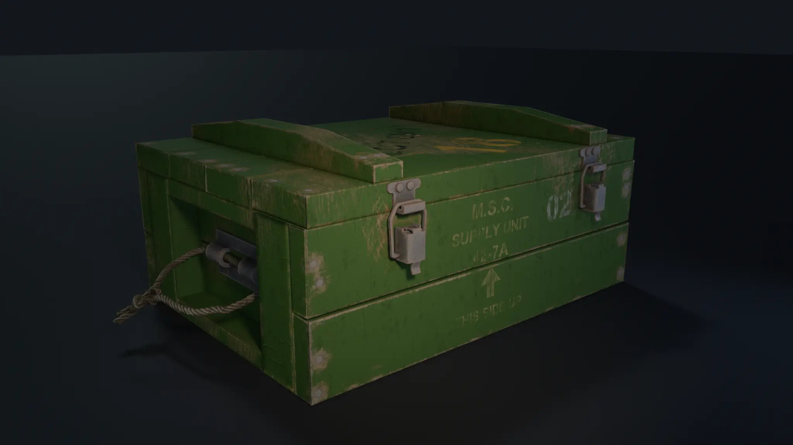
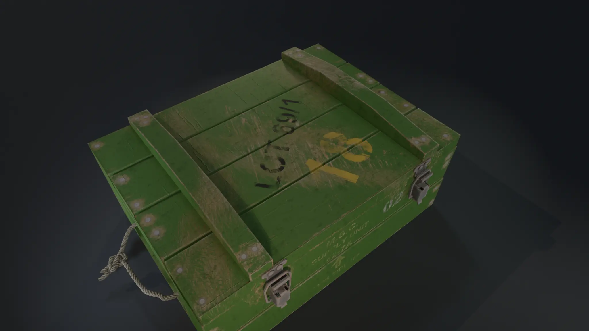
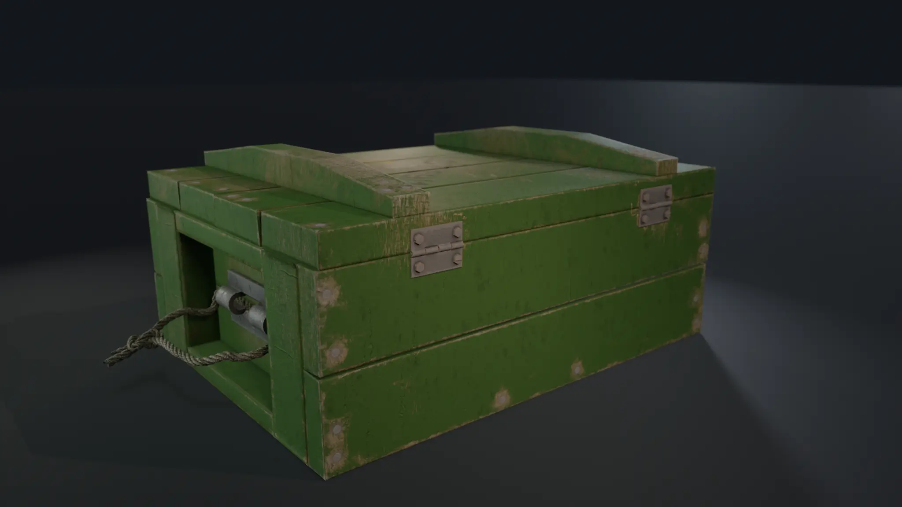

High & Low Poly
Main forms and hardware were developed in Maya, followed by the low-poly mesh preparation.
Selected work / 2026 / Completed asset
A military crate combining wooden construction, metal fittings and a twisted rope handle. Created through a complete high-to-low workflow, from modeling and UVs to baking, PBR texturing and final presentation.

Project overview
The project focuses on the relationship between the crate's main construction and its functional details: hinges, fasteners, locking hardware and the rope handle. Modeling, UV preparation, texture baking and material work were completed as part of the asset pipeline.


Main forms and hardware were developed in Maya, followed by the low-poly mesh preparation.
UV layouts and texture baking transfer high-poly surface information onto the presentation mesh.
PBR material work and final lighting bring out the wood, metal and rope surfaces.